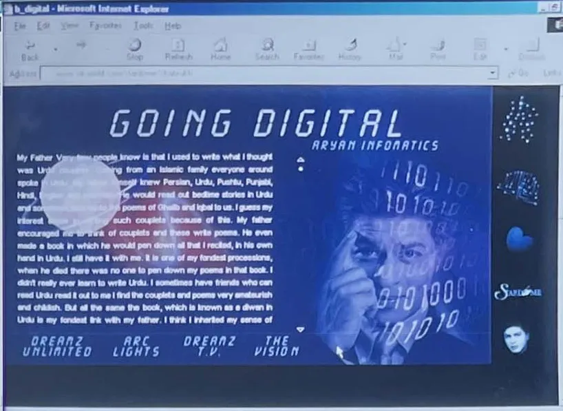

Part II · The First Digital Empire Starts With…, 2000 to 2013 · 8 of 57
Chapter 6 · Very Few Know: SRKWorld, 1999 to 2003
Very few know. Before the superhero, before the train, before Twitter, there was a website named after a little boy, and a cartoon of a star drawn for the screen of a computer. This Part follows one ambition through fourteen years: the line he tried to build too early, the institutions he built instead, and the two campaigns in which the line came back, first as a universe and then as a train.
[image: SRKWorld.com, 2000: Going Digital]

SRKWorld.com, 2000: “Going Digital”, under the Aryan Infomatics name. (Archive: the author’s collection)
The myth was written. In 1999 he set out to own a share of it. (Analysis)
The star becomes a producer. Dreamz Unlimited, the company he founded with Juhi Chawla and Aziz Mirza, made its first film in January 2000. Phir Bhi Dil Hai Hindustani opened on 21 January across 240 screens, on a budget of ₹13 crore: a satire in which he and Juhi Chawla played rival television reporters in a ratings war. It opened a week after Hrithik Roshan’s debut, Kaho Naa… Pyaar Hai, and failed, grossing about ₹25.46 crore worldwide. He later called it the biggest failure for all three partners. (Fact. Wikipedia: Phir Bhi Dil Hai Hindustani) The first film he owned was about the media, and its question would follow him for the rest of his career: who controls the picture the audience sees? (Analysis)
The internet year. India had been online for five years. The state-owned VSNL launched the first public service on 15 August 1995, at 9.6 kbit/s, for ₹5,200 per 250 hours. (Fact. Wikipedia: Internet in India) The money believed anyway. Satyam Infoway listed on NASDAQ in October 1999; Rediff.com followed on 14 June 2000, raising $55.2 million. (Fact. Wikipedia: Sify; CNN Money, 14 June 2000) NASDAQ itself had already peaked at 5,048 on 10 March 2000. (Fact. Goldman Sachs) On 3 July 2000 Kaun Banega Crorepati premiered with Amitabh Bachchan as host and reinvented his career. (Fact. Wikipedia: Kaun Banega Crorepati) The older star went back to the medium that had made the younger one. The younger one went looking for the next medium. (Analysis)
The connection gap, 1999 to 2004
| Year | Internet users per 100 people (World Bank) | Internet subscriptions, March (TRAI) | Mobile subscriptions, March (TRAI) |
|---|---|---|---|
| 1999 | 0.27 | N/A | N/A |
| 2000 | 0.53 | 0.95 million | 1.90 million |
| 2001 | 0.66 | 3.04 million | 3.58 million |
| 2002 | 1.54 | 3.42 million | 6.54 million |
| 2003 | 1.69 | 3.64 million | 13.00 million |
| 2004 | 1.98 | 4.55 million | 33.69 million |
(Fact. World Bank via FRED, ITNETUSERP2IND; TRAI, Performance Indicators FY 2003-04. TRAI’s series begins in March 2000. The two sources measure different things, people using the internet and paid connections, and are not merged.)
When his website went live, roughly one Indian in 190 used the internet at all. Over the next four years mobile subscriptions grew almost eighteen-fold while internet subscriptions stayed under five million. (Analysis, arithmetic on the table) The device that would one day carry his audience was arriving. The connection his website needed was not.
Aryan Infomatics. The website was srkworld.com, and it was launched through a technology company he named after his son, Aryan Infomatics, which appears in the trade press of the time as Aryan Informatics (I) Pvt. Ltd. (Fact. Bollywood Hungama, Nov 2000) The author co-founded it with him and co-led it as co-CEO; the two of them designed the site’s interface themselves, in Photoshop, Illustrator and Dreamweaver. Its technology was built by a second company, TechShastra India Pvt Ltd, co-led by the author and Nishith Shah, with Khan as a silent partner. (Recollection) [Unverified] TechShastra’s registration papers.
This was the first direct line since Doordarshan. In 1989 a state channel had carried him into every home with a set. In 2000 he tried to build the channel himself, with his own name in the address. (Analysis)
[image: SRKWorld.com in 2000: pages of the site photographed on Internet Explorer screens]

SRKWorld.com in 2000, photographed on Internet Explorer screens. (Archive: the author’s collection)
The archive shows what they built. He mapped himself into rooms: his childhood, his school, his theatre, his television, his films on a brick wall called The Wall, an Opening Office linking Aryan Infomatics, Arc Lights, Dreamz TV and The Vision, a Stardome with pages for Juhi Chawla, Anil Kapoor, Johny Lever and Sushmita Sen, an Advantage room for his brands, Karma Cola, Travel Bug, The Galleria, and a news page, The Third Eye, dated 11 November 2000. A tagline ran around a globe: “There’s always a different way to look at things.” (Recollection; archive: screen photographs, 2000) No other Indian star of the time had put his own life online, in his own words. (Analysis) [Unverified] a survey of Indian celebrity websites in 2000 would confirm or correct this.
14 November 2000. He presented SRKWorld himself, at The Taj in Mumbai, after a preview for the press the day before. (Recollection; archive: press conference photographs, 13 and 14 November 2000; Fact. Bollywood Hungama) The next morning exchange4media reported that “film star Shah Rukh Khan has launched an entertainment portal srkworld.com”, with an initial investment of $1 million, and named its promoters: the producer Bharat Shah, Kishore Lulla, the industrialist Jay Mehta and Juhi Chawla, with B4U to supply broadband software and content. (Fact. exchange4media, 15 Nov 2000) Bollywood Hungama added Gauri Khan to the board, named Microsoft and Compaq as technical associates, and the music companies Venus and Tips as partners in a film-music library. It listed about fourteen sections, with Rani Mukerji, Namrata Shirodkar and Santosh Sivan joining the Stardome, and promised concert videos, animated films and live shows online. (Fact. Bollywood Hungama; the two reports differ on whether Bharat Shah and Kishore Lulla invested in their own names or through B4U, and both versions are kept)
[image: Shah Rukh Khan presenting SRKWorld at its press conference, 14 November 2000]

Seated at the table, left to right: Bharat Shah, Sunil Lulla (Kishore Lulla’s brother), Jay Mehta, Nishith V. Shah and Shailja Gupta. Shah Rukh Khan at the podium. (Recollection; archive photograph, 14 November 2000)
It was a star’s portal that meant to be a studio, a music library and a broadcaster, on a network where most homes still dialled in. (Analysis) By the author’s count it drew about 500 articles in November and December 2000, an Outlook cover with Khan and Juhi Chawla, and a live interview on CNBC. (Recollection) [Unverified] the clippings. Much of that coverage can no longer be found online, which is why Khan asked her to put these photographs on public record. (Recollection)
The month around it. Two weeks before the launch, Aditya Chopra’s Mohabbatein opened on 27 October 2000 and became the year’s biggest Indian film, about ₹90 crore worldwide by Box Office India’s count, ₹76.01 crore in another listing. (Fact. Wikipedia: Mohabbatein; both figures kept) The same month the government gave film the status of an industry, so producers could borrow from banks. (Fact. ICMR) The Information Technology Act, the first law for a website in India, came into force on 17 October 2000, four weeks before srkworld.com went live. (Fact. Wikipedia: Information Technology Act, 2000)
2001: the sword and the crash. Then the money left as fast as it had come. NASDAQ fell 77% from its peak, to 1,139.90 by October 2002, and India would not even define broadband until its 2004 policy. (Fact. Goldman Sachs; Wikipedia: Internet in India) Santosh Sivan had first pitched Asoka to him on the roof of a train during “Chaiyya Chaiyya”. “I was hooked,” Khan said. Made for about ₹12.5 crore by Dreamz Unlimited and Arclightz Films, it opened on 26 October 2001, was selected for Venice and Toronto, and was praised abroad. At home it took ₹11.54 crore net and failed. (Fact. Wikipedia: Asoka) The audience abroad followed him into new forms. The audience at home wanted him in the form it knew. (Analysis)
The emperor who lays down his sword gives this book its name. He returns in Part IV, as a man who goes silent. (Analysis)
As the losses mounted, srkworld.com was closed. Wikipedia dates the closure to 2001 and gives the losses of Dreamz Unlimited as the reason. (Fact. Wikipedia: Shah Rukh Khan) [Unverified] the month the site went offline. Seven weeks after Asoka, Karan Johar’s Kabhi Khushi Kabhie Gham opened in more than a hundred countries and became the highest-grossing Indian film overseas. (Fact. Wikipedia: Kabhi Khushi Kabhie Gham) In December 2001 he injured his spine on a film set. In 2002 Devdas, then the most expensive Bollywood film made, premiered at Cannes on 23 May and won him Best Actor at Filmfare. (Fact. Wikipedia: Devdas) Early in 2003 he had cervical fusion surgery in London. Chalte Chalte, the third Dreamz film, succeeded in June 2003, and the partnership ended anyway, over a dispute about casting Juhi Chawla. (Fact. Wikipedia: Shah Rukh Khan)
For five years the pattern held. When he made something of his own, it lost money. When he played for others, it broke records. (Analysis) At the end of 2003 he had the year’s biggest hit in Kal Ho Naa Ho, a fused neck and no company of his own. (Fact. Wikipedia: Kal Ho Naa Ho)
The first direct line had been built too early. It needed fast connections, cheap phones and the habit of looking at a small screen for a star, and India had none of the three. What it proved was that he wanted the line, and that a fan could build it with him. Eleven years later, on a stage in Mumbai, he would describe the company he had started with the author as the one with which they had lost everything. (Analysis; Recollection, archive video, 2011) The idea closed. The ambition did not.